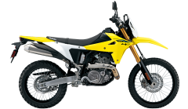

Tipos de Motos
-
Scooter: Automáticas, ideales para ciudad, bajo consumo.

-
Deportivas: Alta velocidad, diseño aerodinámico, para carretera.

-
Naked: Sin carenado, versátiles, buena maniobrabilidad.

-
Enduro/Trail: Para terrenos difíciles, doble propósito.

-
Adventure: Versátiles para carretera y off-road.

Características Técnicas
- Cilindraje: Desde 50cc (ciclomotores) hasta más de 1000cc (deportivas).
- Motor: 2T (más potencia, más consumo) vs 4T (más eficiencia, menos mantenimiento).
- Transmisión: Automática (scooters) o mecánica (la mayoría).
- Refrigeración: Por aire, aceite o líquido según el modelo.
- Frenos: Disco, tambor, ABS en modelos avanzados.
- Suspensión: Telescópica delantera, monoamortiguador trasero en motos deportivas.
Precios Promedio en Colombia (2025)
- AKT NKD 125: $4.690.000 COP
- Victory Combat 100: $4.999.000 COP
- Suzuki GN 125: $5.525.000 COP
- Yamaha FZ25: $14.500.000 COP
- KTM Duke 200: $14.990.000 COP
- Bajaj Pulsar NS200 FI UG: $14.299.000 COP
- Honda XR150L: $10.850.000 COP
Las motos más económicas están entre $4.5 y $6 millones COP, ideales para estudiantes y trabajadores.
Marcas Más Vendidas en Colombia (2025)
-
Yamaha – 81,642 unidades

-
Bajaj – 81,059 unidades

-
AKT – 80,603 unidades

-
Suzuki – 75,112 unidades
-
Honda – 56,315 unidades

-
TVS – 40,449 unidades

-
Hero – 33,391 unidades

Consejos para Comprar una Moto en Colombia
- Define el uso: ciudad, trabajo, viajes o aventura.
- Empieza con cilindrada baja si eres principiante (hasta 150cc).
- Evalúa la comodidad: altura del asiento, peso, postura.
- Considera el consumo de combustible y mantenimiento.
- Verifica disponibilidad de repuestos y servicio técnico.
- Incluye en tu presupuesto: SOAT, matrícula, casco certificado y licencia.
- Explora opciones de financiamiento si no tienes el monto completo.